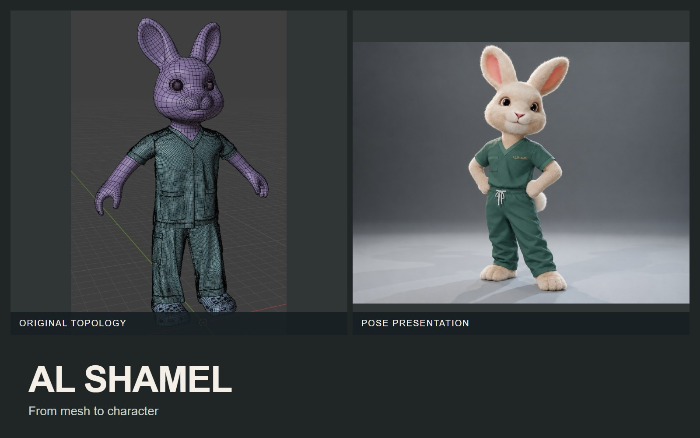
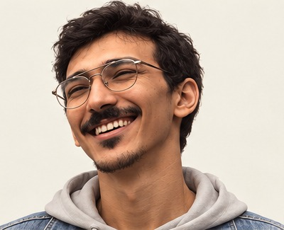

↗
↗Animation
DeadDa
Graduation short film / collaborative production.
OSCAR ANWAR
I’m Oscar, a 3D artist and generalist.
I build characters, environments, and real-time experiences.

From a single concept to a complete rigged character.
THE PORTFOLIO

THE PERSON BEHIND THE WORK
I’m Oscar, a 3D artist working across characters, environments, and real-time experiences. I take assets from sculpt and surface development through to lighting and engine integration, with experience leading artists and collaborating with game and engineering teams.
HAVE SOMETHING IN MIND?
For a project, a studio opportunity, or a conversation about 3D.
zamrart@yahoo.com
Download résumé ↓